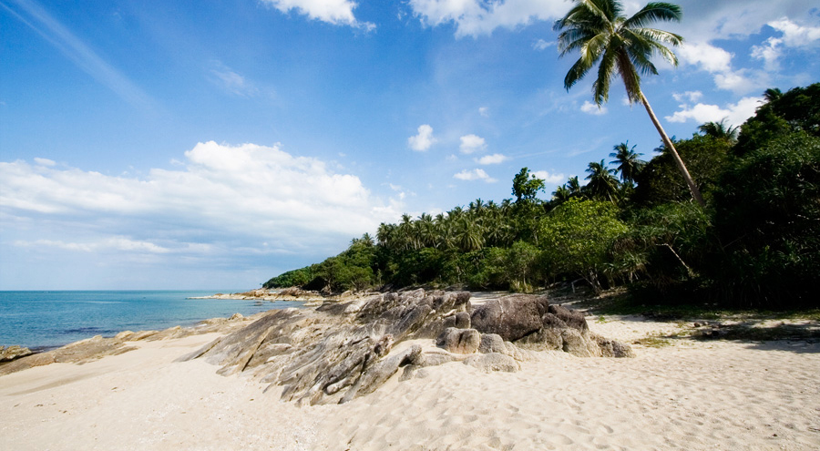

หาดท้องหยี ที่เที่ยวนครศรีธรรมราช กางเต็นท์แคมป์ปิ้ง กลางชายหาดเงียบสงบ

หาดท้องหยี ชายหาดสวยเงียบสงบ มีธรรมชาติที่อุดมสมบูรณ์ น้ำทะเลสีฟ้าครามและไม่ลึกมาก เหมาะแก่การทำกิจกรรมทางน้ำได้เป็นอย่างดี ส่วนหาดทรายก็ขาวสะอาด ทอดยาวเป็นแนวโค้ง มีโขดหินขึ้นเป็นหย่อมๆ และต้นปาล์มที่ตั้งเรียงรายเพิ่มร่มเงา ทำให้ทิวทัศน์ของชายหาดแห่งนี้ดูสวยงามและร่มรื่นกว่าหาดอื่นๆ ไม่น้อย

หาดท้องหยี มีความยาวประมาณ 1 กิโลเมตร มีพื้นที่เพียงพอให้ทำกิจกรรมสนุกๆ เช่น เล่นวอลเล่ย์บอลชายหาด ตกปลา ตกหมึก และดำน้ำตื้น ถ้านั่งเรือออกไปทางตอนใต้ของอ่าวจะพบกับแนวปะการังที่ค่อนข้างอุดมสมบูรณ์ ทำให้มีฝูงปลาแหวกว่ายอยู่บริเวณนั้นค่อนข้างมาก พื้นที่ตรงนี้เองค่ะที่เหมาะกับการไปดำน้ำตื้นชมโลกใต้ท้องทะเลสวยๆ กัน